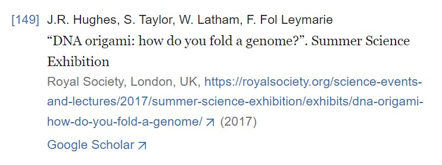

| TITULO | "Communicating Genome Architecture: Biovisualization of the Genome, from Data Analysis and Hypothesis Generation to Communication and Learning" "Comunicando la Arquitectura del Genoma: Biovisualización del genoma, desde el análisis de datos y la generación de hipótesis hasta la comunicación y el aprendizaje" |
| AUTORES | Mike N. Goodstadt Marc A. Marti-Renom |
| RESUMEN | "Genome discoveries at the core of biology are made by visual description and exploration of the cell, from microscopic sketches and biochemical mapping to computational analysis and spatial modeling. We outline the experimental and visualization techniques that have been developed recently which capture the three-dimensional interactions regulating how genes are expressed. We detail the challenges faced in integration of the data to portray the components and organization and their dynamic landscape. The goal is more than a single data-driven representation as interactive visualization for de novo research is paramount to decipher insights on genome organization in space." "Los descubrimientos del genoma en el núcleo de la biología se realizan mediante la descripción visual y la exploración de la célula, desde los esbozos microscópicos y la cartografía bioquímica hasta el análisis computacional y el modelado espacial. Exponemos las técnicas experimentales y de visualización que se han desarrollado recientemente y que captan las interacciones tridimensionales que regulan cómo se expresan los genes. Detallamos los retos a los que se enfrenta la integración de los datos para retratar los componentes y la organización y su paisaje dinámico. El objetivo va más allá de una simple representación basada en datos, ya que la visualización interactiva para la investigación de novo es primordial para descifrar la organización del genoma en el espacio." |
| PALABRAS CLAVE | genome architecture molecular visualization 3D modeling multiscale genomics 4D Nucleome |
| ENLACE | Busquedad: Enlace a la Búsqueda |
| REFERENCIAS | El artículo seleccionado cuenta con 149 referencias, siendo esta la última de ellas:  |